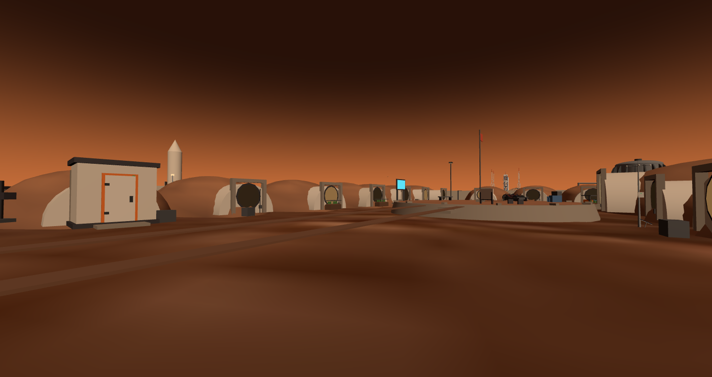
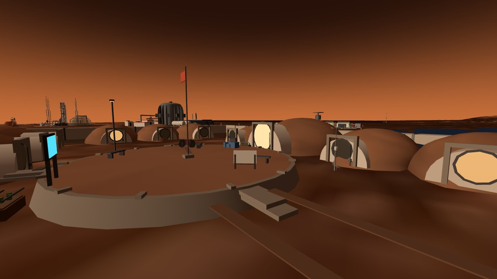
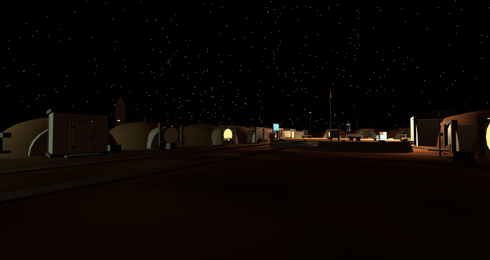
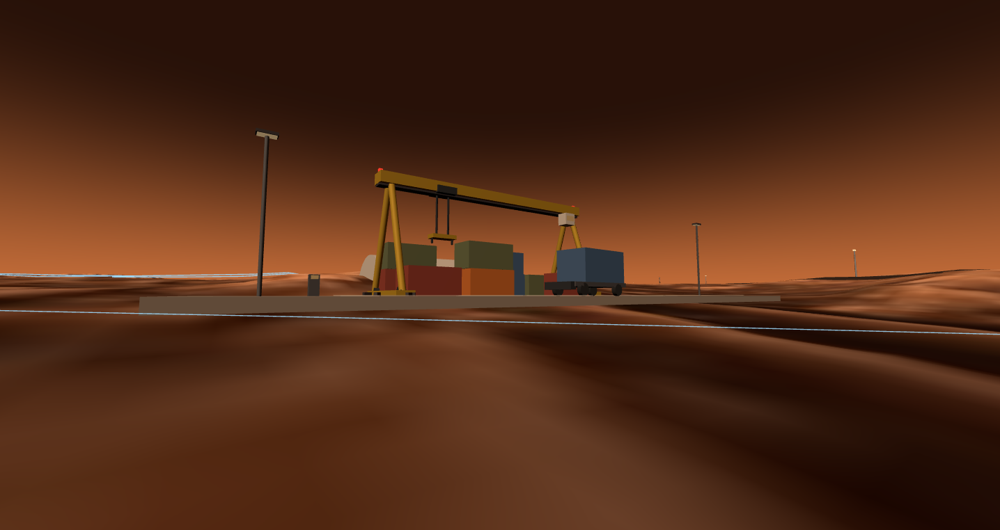
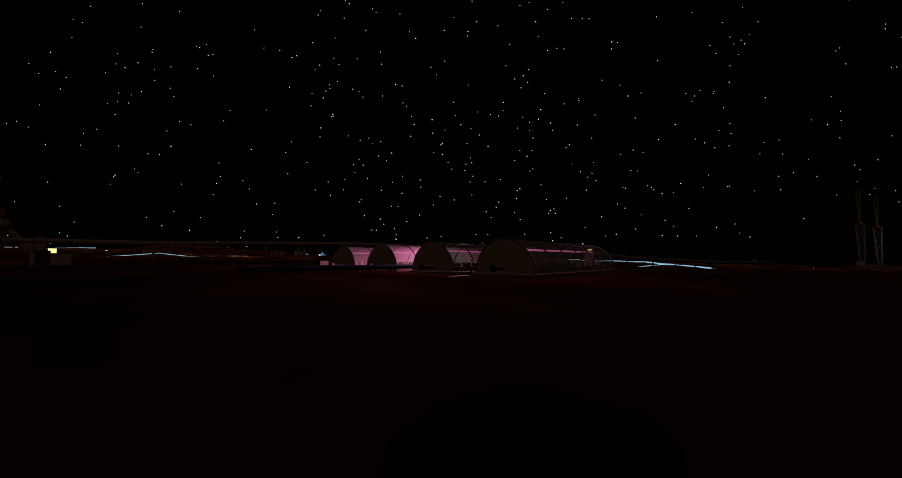
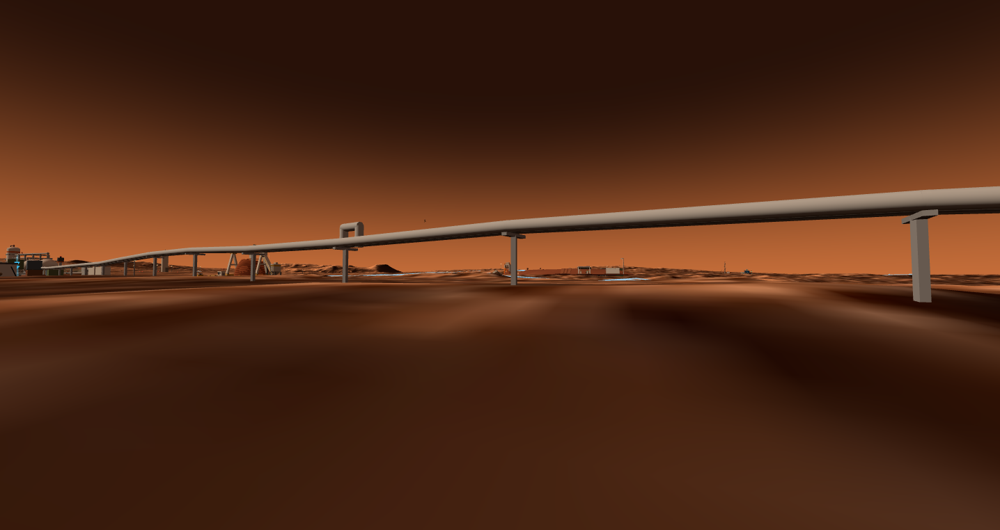
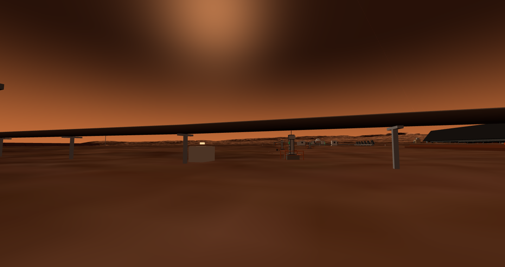

Twenty-six landmarks do not make a city. This is the densification pass — a 16-cabin earth-sheltered village on one shared atmosphere, a freight yard, a row of pink-glowing crop tunnels, and three elevated pipe corridors — the connective tissue that makes the map read as a settlement. Headline claim: under two metres of regolith, the village's annual dose is 6.2 mSv — a 38× cut, computed, not asserted.
A diagnosis, then a campaign: the city had 26 impressive buildings and a mean nearest-neighbour distance of 60 metres of empty sand.
Every earlier district added a landmark — a reactor, a launch pad, an observatory. What was missing was everything between them: roads that go somewhere, pipes that explain where the methane comes from, housing that implies people, freight that implies supply lines. The densification pass added exactly that, in one push: a village, a depot, a greenhouse row, seven road spurs and three pipe corridors — plus roadside light masts, container laydowns and marker posts as texture.
The organising rule: every piece of fabric must carry its own physics. The village's soil berm is a computed shielding ledger, the crane's speed limit is an inertia ledger, the greenhouse glow is a chlorophyll absorption spectrum. Nothing here is set dressing.



Five design accounts decided every visible shape — the berm, the curve of the hulls, the corridor net, the two airlocks, even the bikes.
The berm. Two metres of compacted regolith (330 g/cm²) cuts the surface dose from 234 to 6.2 mSv/yr. The same soil is 55 diurnal-wave skin depths thick: the hull never sees day or night, only ~215 K constant ground, and night heat loss falls from 325 to 2 W/m². One material, two ledgers.
The curve. At 70 kPa, a semi-cylindrical membrane needs 0.7 mm of wall (3 mm as built); a flat-sided box resisting by bending would need 53 mm — 76× thicker. And at 0.38 g the berm presses down only 12.2 kPa, 17% of the internal pressure: soil is shielding, not ballast. That is why nothing in the village is square.
The corridors. 2×2 m tubes through the ridge merge 16 cabins into one pressure domain: airlocks drop from 14 to 2 (0.2 kWh and 3 minutes per cycle saved on every visit), with seal rings every ~6 m so one breach does not share its fate.
The bikes. Cruising at 30 km/h costs 31 W here against 249 W on Earth — but braking distance is 2.64× and a 12 m turn wants a 57° lean, because grip scales with mg while inertia does not. The village speed limit is a friction coefficient, not a rule.
Beds imply dinner tables; dinner tables imply supply lines. The depot and the greenhouse row are the same argument continued.
ops-depot-01 sits with its three marked bays on the east trunk road: a 20 m gantry whose trolley crawls on purpose (weight gets the 0.38 g discount, swing inertia pays full price), container stacks capped at two high by storm wind load, and a half-arch warehouse whose volume is really the synodic period expressed as shelving — every spare must cover a 26-month resupply pipeline. Throughput ledger: the CZ-10B ISRU campaign supports 3.3 launches per window, and the restated envelope — roughly half of it food, per the integrator ruling on the grain question — puts ~100 t of boxes through the yard per window.
res-greenrow-01 is the production counterpart to the showcase dome: four film tunnels at 25 kPa of CO₂-rich air, because crops do not need human pressure — halving pressure halves hoop tension (P·R ≈ 69 kN/m), leak rate and anchoring together. The night glow is pink because the LEDs emit only the two chlorophyll absorption peaks; green would just bounce off. Row plus dome give ~490 m² of beds — full calories for 10–12 people, or the fresh-produce ration for the whole town, which is the actual strategy: ship the shelf-stable staples, grow what a container cannot carry.


Three elevated pipe racks walk the city's mass flows across the map — and a layout auditor treats every road and pipe as a protected corridor.
The methane line runs ~700 m from the Sabatier plant to the launch complex — twin mains with expansion U-loops every ~140 m, the propellant narrative made walkable. The heat loop carries reactor heat to the radiator field in three legs, threading a 4 m window between a neutron-sentinel arc and the compute center. The water line links the Rodwell well to the dome and the greenrow. All on stanchions every 14 m, draped over real terrain.
Keeping this web untangled is code, not care: audit_layout.mjs runs a separating-axis test between every asset footprint and every corridor — 12 roads and 5 rack segments, each inflated by half its width plus a 2 m shoulder. Assets that legitimately end a line (the pad, the well, the dome) sit on an explicit exemption list; everything else that touches a corridor fails the build.


Every number above, and which run produced it.
| Claim | Value | Produced by |
|---|---|---|
| Village dose under 2 m regolith | 234 → 6.2 mSv/yr (38×) | mars-village/design_accounts.py · acc1 |
| Diurnal thermal wave at 2 m depth | 55 skin depths; 325 → 2 W/m² | mars-village/design_accounts.py · acc1b |
| Membrane vs flat-plate wall | 0.7 mm vs 53 mm (76×) | mars-village/design_accounts.py · acc2 |
| Berm weight vs internal pressure | 12.2 kPa = 17% | mars-village/design_accounts.py · acc2 |
| Airlock economics after merging | 14 → 2 · 0.2 kWh / 3 min per cycle | mars-village/design_accounts.py · acc3 |
| Bike cruise power / braking penalty | 31 W @ 30 km/h · 2.64× | mars-village/design_accounts.py · acc4 |
| Berths and dose-budgeted stay | 28–32 · <50 mSv / Mars year | mars-village/design_accounts.py · acc5 |
| Depot throughput per synodic window | ~100 t (half of it food) | mars_rocket2/sim_isru_campaign (CZ-10B ledger) |
| Greenrow hoop tension at 25 kPa | P·R ≈ 69 kN/m | analytic, res-greenrow-01.info.json · tunnel card |
| City agriculture water draw | < 300 L/day | Rodwell water ledger (res-dome-01 · header cards) |
| Protected corridors under audit | 12 roads + 5 rack segments (w/2 + 2 m) | scripts/audit_layout.mjs |
| Final layout state, 34 placed assets | clean — no overlaps, roads clear | scripts/audit_layout.mjs |
The auditor exists because things went wrong first — and it kept catching us for the rest of the campaign.
The exhibit on the road. A delivered exhibit was once placed straddling the hub–reactor spur: roads are engine geometry, not manifest assets, so the overlap audit simply could not see them. That incident grew the road-corridor check. The first version used bounding circles and promptly false-flagged a 60 m tunnel whose distant corners were nowhere near the road — replaced with exact rotated-rectangle SAT tests, regression-tested in both directions.
The greenhouse on the gas line. The greenrow's first position (135, 75) crossed the CH₄ rack corridor. The audit failed the build; the row moved 17 m north. The auditor's first real catch on its own new rule.
The depot facing backwards. First placement had the spares arch greeting the road and the loading bays staring at empty desert. A verification screenshot caught it; one rotation flip later the flatbed waits where trucks actually arrive. Screenshots are part of the pipeline, not decoration.
The heat pipe through the sentinels. The heat loop's straight-line route crossed the fusion perimeter's neutron-sentinel arc. Rerouted into three legs threading a 4 m corridor between the sentinels and the compute center — with per-leg doorstep exemptions so the audit stays strict for everyone else.
The village that read as beans. V1's soil berms made a fine dose ledger and a monotonous skyline. The v2 polish gave every cabin a vent stack with a dust cap — the earth-sheltered home's breathing hole — porch lamps, a dropped child's bike, and a flag that sways on a 2.8 s period because thin air is slow.